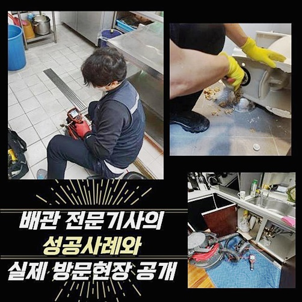
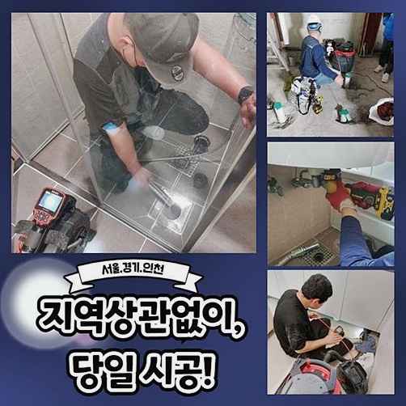
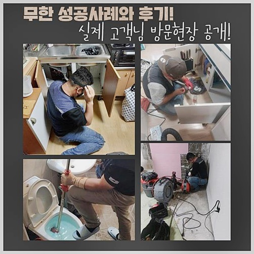
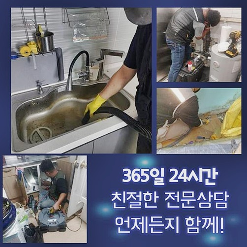
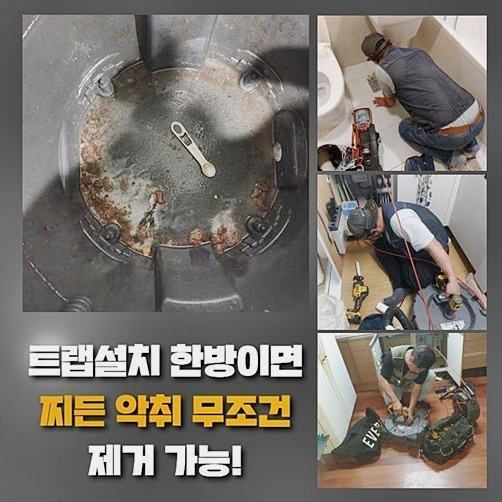
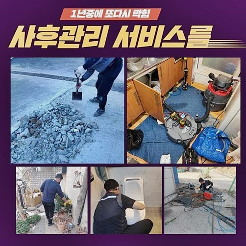

🏠 용인 중앙동욕실막힘 원삼면 오수맨홀청소 누수
용인 중앙동 싱크대막힘 전문 시공 후기

📋 작업 개요
- 위치: 용인 중앙동, 중앙동, 용인
- 서비스 유형: 싱크대막힘, 변기막힘, 하수구막힘, 배관막힘, 맨홀막힘, 누수수리, 역류해결, 배관청소, 고압세척
- 작업 일시: 2024. 9. 29. 17:41
- 업체명: 하수구수사대 (010-5615-2118)
🔍 문제 상황
용인 중앙동욕실막힘 원삼면 오수맨홀청소 누수
오수가 순탄하게 흘러가지 않는 경우 하수로의 문제뿐만이 아니고 건물안의 상업시설이나 주거지에도 여러가지 상황으로 발생하는 피해를 불러오게 됩니다
이같은 문제상황을 해결해내고자 하시면 동종 경력이 풍부한 증명된하수구증명된전문진의 도움들이 필요하게 됩니다
하수관에 이상반응이 나타나 처리하는 과정중에 다른 잠재적인 피해를 미리미리 알아낼수있는 경우들도 종종 생겼습니다
배수로의 내부면적을 검사하며 예상치 못한 이상현상을 사전에 알 수 있고 반복적인 하수시스템 정비를 통하여 설비의 적정수명을 잘 이어나가고 대비하고 파악합니다
오염물이 모이게 된 물은 메인의 배수관을 통해서 외벽으로 흘러갑니다
이때 이유들로 메인의 배수로가 꽉 막힌다면 저층의 세대에서 역류현상이 우려되게 됩니다
말씀드린 사태가 일어났다면 곧바로 대응하는 자세가 필요하게 됩니다
최근 메인 배관 청소를 받아보았지만 저층세대에서 역류 이상현상이 생겨 메인의 배수관 정밀진단을 요청받게 되었습니다
배수관의 문제 수위가 아주 심해서 아래층으로 역류현상이 진행됐는데 빈틈없는 확인을 위해 배수로의 나뉜 구간전부 놓치지 않고 체크할수 있도록 필요한 작업들을 지시했습니다

🔎 원인 분석
💡 전문가 진단: 정밀 진단 장비를 사용하여 슬러지의 고착 여부를 판명하고 타격/세척 작업을 실시했습니다.
하수시스템에 오염수의 범람사태가 일어났다면 어디 배수로에서 일어나게 된건지 꾸준하게 알아보는것이 우선시 되어야합니다
작업 초반에 오염물이 단단하게 붙어있어 청소하는게 아주 힘든 진행이였는데요 이런 경우에 사용하는 샤프트기계를 이용하여 분쇄하는 과정들을 먼저 이어나갔습니다
다음순서로는 강한압으로 하수를 분사해 오랫동안 쌓인 곰팡이를 시작으로 단단한 침전물을 전체적으로 없애는 과정을 했습니다
일상속에서 배관문제로 일어나는 난감한 상황과 이로인한 금액적인 부담감은 중차대한 일로 생각이 됩니다
가게나 근린공공 시설에서 비정상적인 하수시스템으로 인하여 영업이 방해되고 그에 따르는 사태를 정리하는데까지 수많은 노력들이 필요시 됩니다
적절한 때에 피해를 찾아내지 않는다면 더 큰 문제로 나아갈 수도있어 해결해야하는 문제들이 많이 발생됩니다
일반영업장이나 근린공공 시설에서 하수라인의 막힘들이 큰 문제들을 발생시키므로 이를 처리하고자 알아보신다면 전문가들의 과정이 필수입니다
다 쓴 소량의 쓰레기를 변기에 내리는 행동은 피해야하며 하수로가 있는 곳을 깨끗하게 이용하는게 가장 좋습니다
원활하게 진행되는 배수시스템을 위해서라면 규칙적인 청소를 통하여 배관 피해를 사전에 예방하는게 중요하게 됩니다
고여있는 오염수에서 나는 냄새는 사용자에게 불쾌한 기분을 주고 신체적으로도 부정적영향을 줍니다
주로 카페같은 상가에서는 손님들의 이용거부의 이유로 적용될 수도 있기때문에 재빨리 해결해야 합니다

🔧 작업 과정
하수로의 역류현상은 다양한 장소들에서 흔히 발견되는 문제들이나 일반영업장이나 여러사람이 이용하는 장소에서 더 큰일로 다가옵니다
언급 해드렸던 상황이 일어나면 신속하게 진단을 받고 대응하는게 필요하게 됩니다
고압의 세척기들은 케이블로 인해 둥근 모양의 하수관의 안쪽을 다각도로 세척 해내고 고압의 물을 사용하면서 다량의 침전물을 배출시킵니다
이를 통해 하수로 내벽에 있는 딱딱한 오염물질을 확실하게 세정해냈으며 밖으로 이어진 하수로를 따라서 침전물을 정상적인 순환방식으로 처리합니다
배관 피해를 방지하기 위해서 일정한 주기를 정해 배수구와 가까운 곳을 온수를 이용해 세척하고 노폐물이 녹아 배출되게끔 관리하시면서 사용하세요
하수관이 오래시간 지날수록 노폐물이 쌓이게 되고 관벽이 입어, 반복적으로 확인하고 배관을 바꾸는게 필요하게 됩니다
결론적으로 배관 문제들을 미연에 방지하려면 일상적인 관리들이 중요하게 되겠죠
오전에 수리과정을 부지런히 종료하고 이후에 의뢰를 받은 곳은 U자 트랩내부에 심각하게 불순물이 쌓이면서 하수가 순조롭게 순환되지 않았습니다
침전물을 없애기가 위해 플랙스샤프트 기계를 써서 파쇄 시키는 과정들을 시작하게 되었습니다
작업 초반에 고여있는 많은 부분에서 난감했지만 깎아낸 침전물을 배출시키며 깊숙하게 진입을 하면서 작업들을 시행하게 되었죠
역류가 아주심한 현장은 시작점과 끝점에 동시에 작업하며 분쇄 시키는게 최선의 방법입니다
강력한 수압으로 내려보내는 작업은 문제들을 야기할 수 있어서 전문적인 기술이 필요 했습니다
점검을 해보니 건물외벽 배관을 포함해 전부 역류하는 것을 알게 되었습니다
작업들을 위해서 시멘트맨홀을 오픈하고 확인을 해보았습니다
배수관이 큰 크기여서 고압의 모터들을 이용하여 노폐물을 분리시키는 과정이 필요하게 됩니다
생활속에서 이물질을 하수시스템에 넣는 행위들이 배수관에 나쁜 영향을 준다는 것을 생각하지 않아요


✅ 작업 완료
일상적으로 쓰고남은 불순물을 싱크대등에 흘려 넣는 것이 크게 걱정할게 없다 생각하고 지나가지만 많은 사례로 하수관에 음식에서 나온 기름기가 축적돼서 큰 역류현상이 일어나는걸 반드시 명심하세요
이때 문제뿐 아니고 딱딱한 건물일수록 하수관의 노후화가 발견되어 막힘 장애가 번번히 야기되기도 합니다
이때 고압력의 장비는 문제상태에 맟춰서 작업과정을 진행시켜야 하기때문에 여러크기의 하수관의 경우들은 세밀하게 진행되어야 이어진 문제점이 생기지 않게 됩니다
아까 보신 작업상황은 기름들로 꽉찬 하수로를 강한압의 기기를 사용하여 확실하게 마무리 하였습니다
고압력의 기기는 다루기 힘든 기기로서 전문가가 아닌 일반분들이 작업을 하시면 하수관에 피해를 줄수도 있기때문에 반드시 전문업체의 작업들을 의뢰하시기 바랍니다



⚠️ 베란다 누수 및 방수 관리 방법
- ✅ 비가 많이 올 때 창틀 주변이나 아래층 천장에 얼룩이 생기는지 정기적으로 확인해 보세요.
- ✅ 우수관 주변 실리콘 마감이 들뜨거나 깨진 틈새가 있는지 손상 여부를 수시로 체크하세요.
- ✅ 베란다 바닥 타일의 줄눈(메지)이 소실되면 그 틈으로 물이 침투하여 누수가 유발됩니다.
- ✅ 누수 의심 증상 발견 시 방치하면 아래층 손실이 커지므로 즉시 전문가의 진단을 받으십시오.
💡 핵심 정리
- 확실한 장비 작업(내시경 점검 및 샤프트 스케일링)으로 원인을 뿌리 뽑습니다.
- 작업 후 1년 이내에 동일한 부위 재발 시 100% 무상 A/S 서비스를 보장합니다.
- 서울 · 경기 · 인천 전 지역에 24시간 언제든 긴급 출동할 수 있도록 항시 대기 중입니다.
❓ 자주 묻는 질문 (FAQ)
🚨 용인 중앙동 싱크대막힘 문제로 고민이신가요?
정확한 원인 진단과 확실한 시공으로 재발 없는 해결을 약속드립니다.
24시간 긴급 출동 | 서울 · 경기 · 인천 전지역 | 1년 내 재발 시 무상 A/S